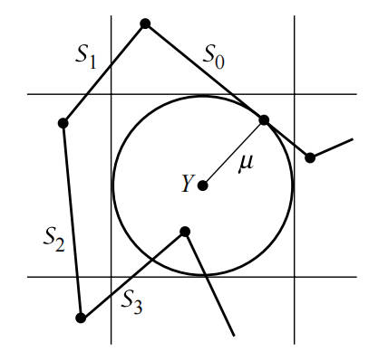

多义线即折线（polyline），由 n 个点连续组成，称 n - 1 段多义线。
假设已经知道了点到直线如何计算，如果想要计算点到多义线的距离该如何计算呢？
点到直线的距离参考：http://pengfeixc.com/blogs/algorithm-math/point-to-line.html
最简单的方式是计算点到每一段线段的距离，然后取最小距离。但是这种方式计算量大，性能消耗太大。
假设要求点 到多义线 的最小距离，一种方式是使用排除法，计算点 到多义线的第一段线段的距离 ，然后以点 往水平方向向前向后分别做竖直线，向上向下做水平线，四根线形成一个正方形区域。

在正方形外的线可以直接排除，正方形内的或者与正方形相交的线段参与计算。这样可以排除一部分线段。假设多义线其中一段为 ，当起终点 x 满足下列条件时，表示线段在正方形外。 $$ |x_i - a| \geq \mu \ |x_i+1 - a| \geq \mu \ (x_i - a)(x_i+1 - a) > 0 $$
对 y 同样有效。 $$ |y_i - a| \geq \mu \ |y_i+1 - a| \geq \mu \ (y_i - a)(y_i+1 - a) > 0 $$
图中，通过上述公式，可以排除 ，但是没法排除 和 ，在依次遍历多义线的每一段线时，遇到不能排除的线段时，计算点 到该线段的最短距离，如果距离小于 则更新，并且后续判断线段是否被排出时，使用新的最短距离。最终遍历结束可以得到点到多义线的最短距离。
（完）